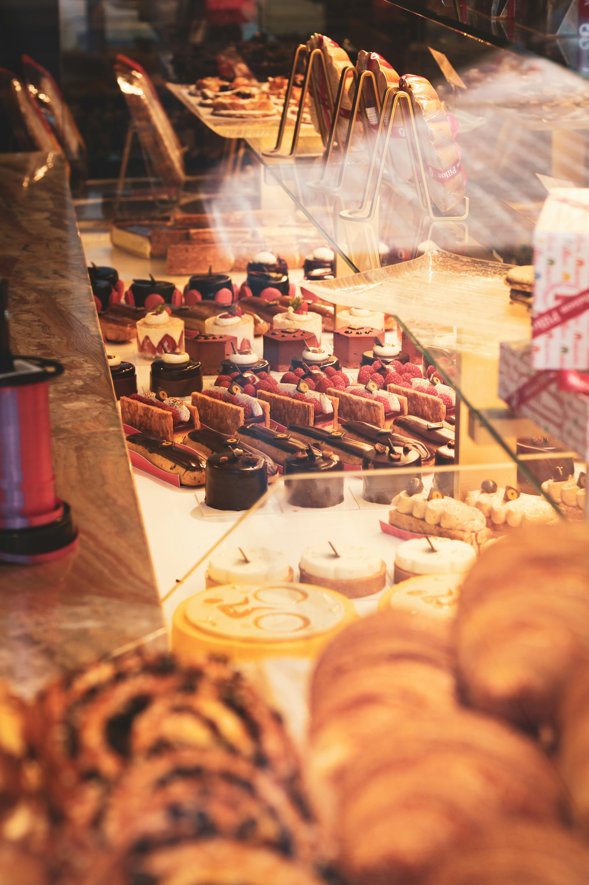
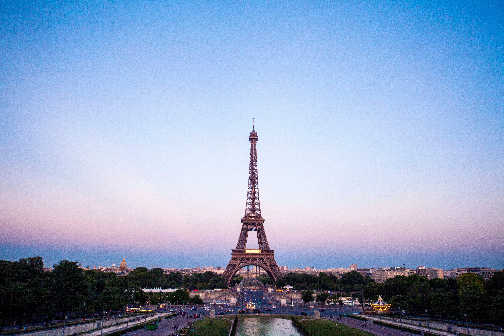
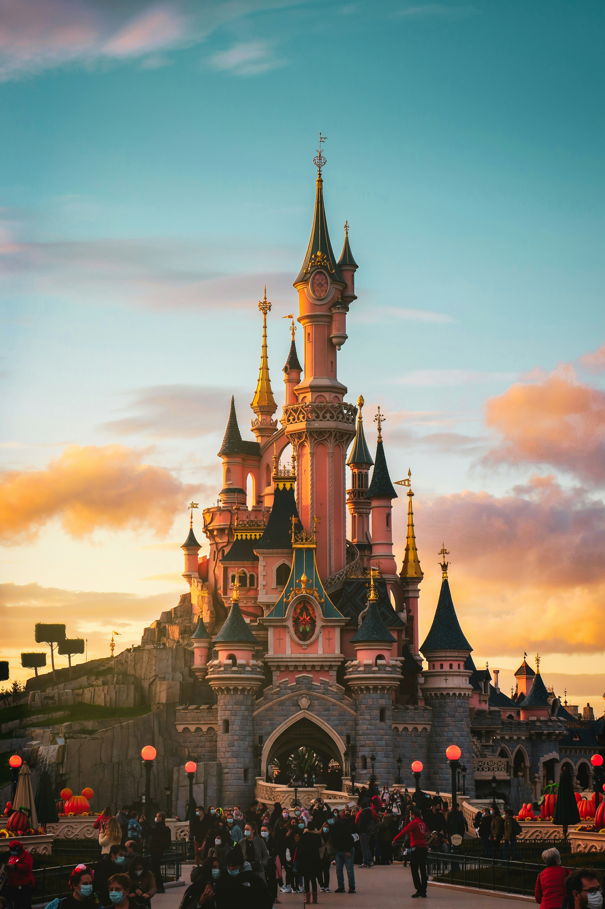
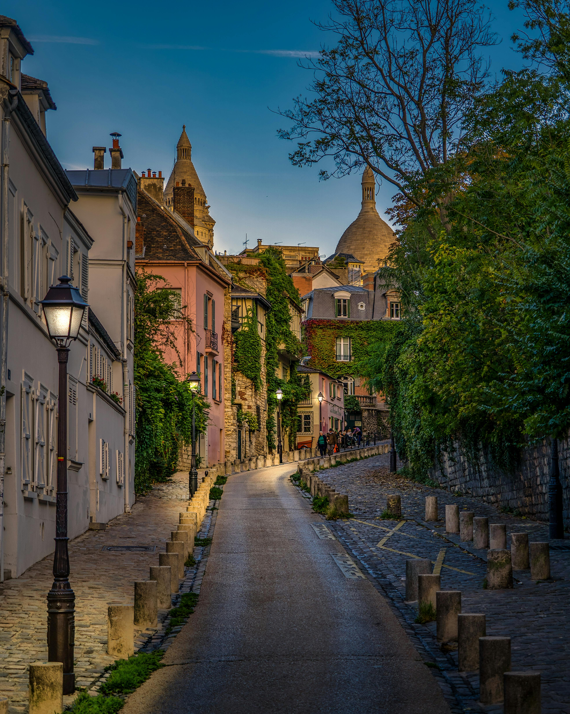
.jpg)





France is known for their stunning landmarks, historic towns and picture-perfect scenery that makes every corner feel special. From iconic landmarks to hidden gems.
Read MoreFrance is known for their rich food culture, where every region offers something unique. From warm,flaky pastries to slow-cooked classics
Read More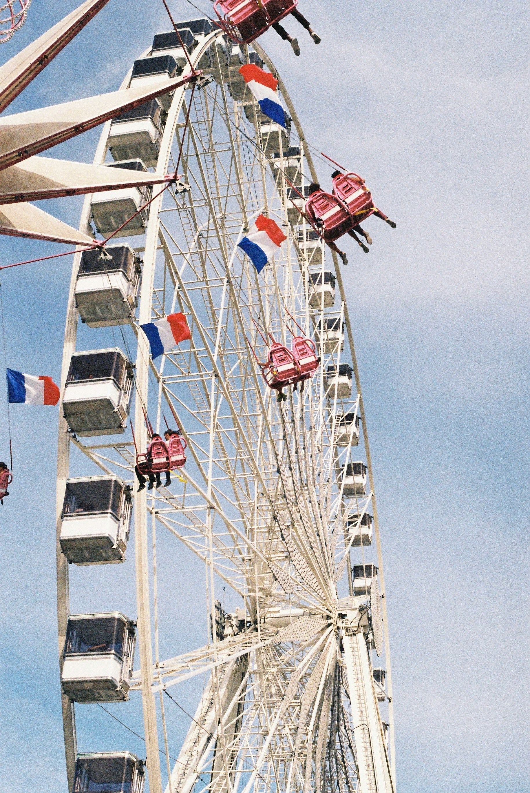
France is known for their exciting activities, theme parks and one of a kind experiences that make your trip unforgettable.
Read More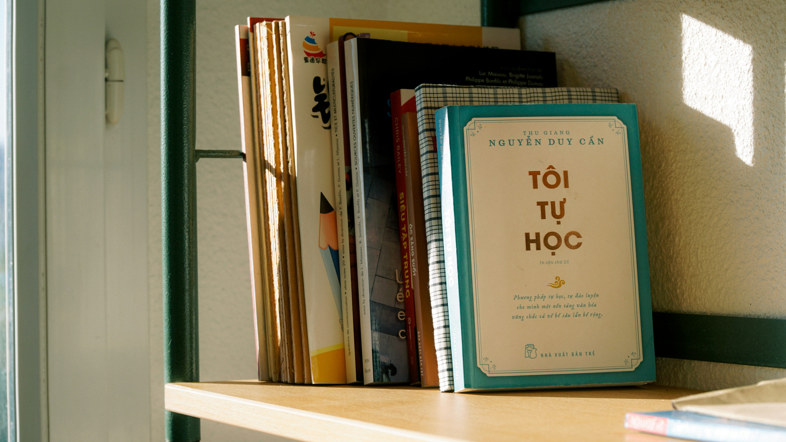
Transportation Tips - Metro systems are efficient, use them to get around
Card vs Cash - Card is widely accepted, but keep a bit of cash for small cafés
Safety & Scams - It is common for tourists areas to contain scams, especially around major landmarks
Cultural Norms - Be quiet in public
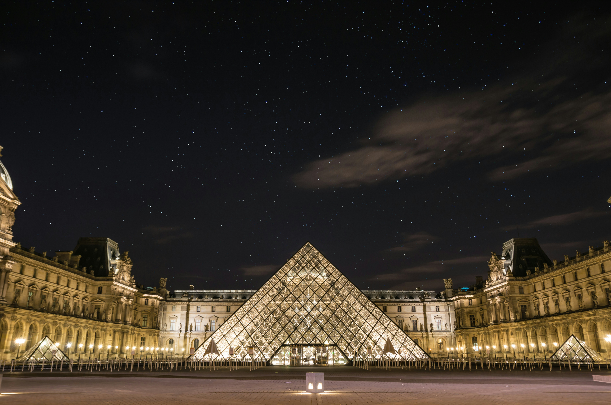
France is known for their world-class art, and the Louvre is the heart of it all. It's the largest art museum in the world, filled with masterpieces, ancient history and incredible architecture. Even just walking through the glass pyramid entrance feels iconic.
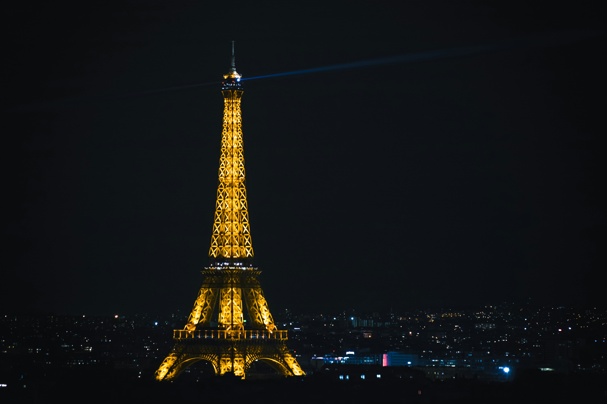
France is known for their iconic landmarks, with the most famous being the Eiffel Tower. Standing tall over Paris, it offers beautiful views on the entire city, especially at night.
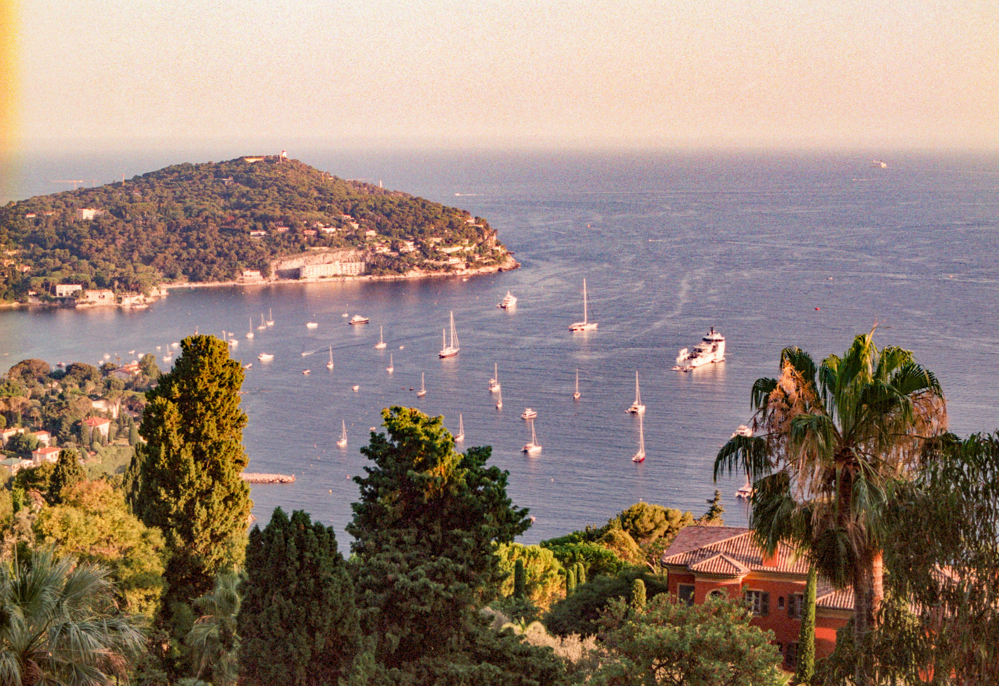
France is known for their stunning coastlines, and the French Riviera is one of the most beautiful stretches of shoreline in the world. With crystal blue water, colourful buildings, and sunny weather almost all year, this region has a calm, luxurious vibe that feels straight out of a movie
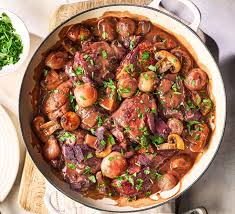
Coq au Vin is a traditional French dish made by slow-cooking chicken in red wine with mushrooms, onions, bacon and herbs. The lon cooking time gives it a rich, deep flavour and tender texture. It's one of France's most famous comfort foods. A true French classic
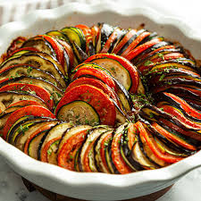
Ratatouille is a traditional dish made with slow-cooked vegetables like tomatoes; courgettes and eggplant seasoned with herbs. It's light, colourful and full of fresh flavour. This dish shows the simple side of French cooking and is loved for its comforting taste
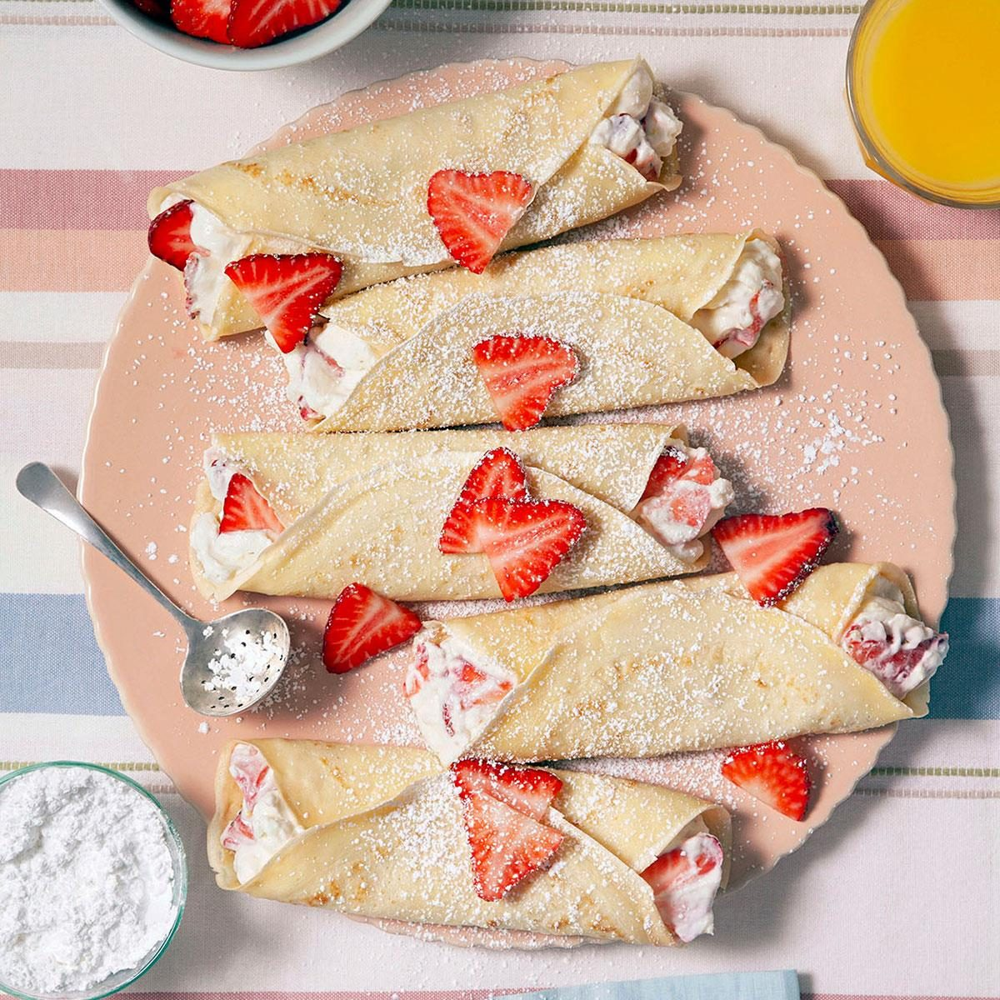
Crêpes are thin, soft French pancakes that can be enjoyed sweet or savoury. You'll find them everywhere - from street stands to cafés - filled with nutella, sugar and fruit. They're simple. delicious and one of the easiest French treats to enjoy anytime

Wine tasting in France is all about exploring the country's famous vineyards and learning how different regions create their signature flavours. From rich reds in Bordeaux to sparkling Champagne andlight roses in Provence, every area offers something unique. It's a relaxed way to enjoy the scenery ,try new wines and experience a big part of French culture
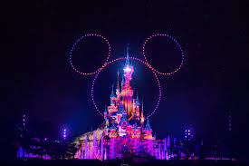
Disneyland Paris is one of France's most magical attractions, bringing classic Disney stories to life with rides, parades , character and themed lands. From thrilling rollercoasters to gentle family rides, there's something for everyone. The park is full of colour , music and atmosphere, making it a fun and unforgettable experience for visitors of all ages
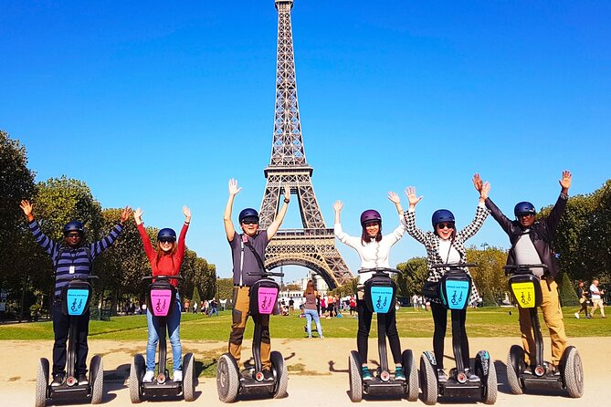
Explore the city without walking at all. You will glide through the streets, pass famous landmarks and see hidden spots you would probably miss on foot. It's perfect if you want something easy, active and exciting. A great way to cover more of the city in less time